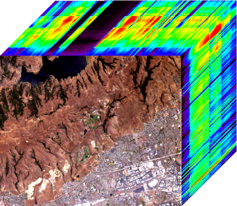

Nicolas Dobigeon
Associate Professor at INP-ENSEEIHT, University of Toulouse
Menu:
Version française »
Inverse problems in hyperspectral imaging
M.Sc., Ph.D. and Postdoctoral positions
The Signal and Communication Group at IRIT Laboratory, Toulouse, France, is currently offering several M.Sc., Ph.D. and Postdoctoral positions in statistical signal/image processing for hyperspectral imaging.
Interested students are invited to read the following important note.
Contact: Nicolas Dobigeon.
Abstract
Over the last several decades, new techniques of imagery have appeared which measure more than the 3 usual Red-Green-Blue wavelengths (see Fig. 1). As soon as the number of wavelengths becomes large (e.g., more than 10 spectral bands), the resulting images are referred to as hyperspectral images. As a consequence, each pixel is associated with a spectrum which may count up to thousands of wavelengths. Such detailed measurements are useful in many areas such as remote sensing (e.g., to recognize and classify cultivated areas) [1,2] or dermatology (e.g., to diagnose the state of melanomas) [2].

Fig. 1. An hyperspectral data cube.
In this context, we are currently addressing various issues related to these multi-band images (e.g., spectral unmixing [4,5], fusion [6], change detection [7], among others) and looking for highly motivated students to pursue M.Sc./Ph.D. thesis and Postdoctoral research on these topics. More technical details can be provided upon request.
References
| [1] | J. Bioucas-Dias, A. Plazza, G. Camps-Valls, P. Scheunders, N. Nasrabadi, and J. Chanussot "Hyperspectral Remote Sensing Data Analysis and Future Challenges", IEEE Geoscience and Remote Sensing Magazine, vol. 1, no. 2, 2013. |
| [2] | J. M. Bioucas-Dias, A. Plaza, N. Dobigeon, M. Parente, Q. Du, P. Gader and J. Chanussot, "Hyperspectral unmixing overview: geometrical, statistical, and sparse regression-based approaches," IEEE J. Sel. Topics Applied Earth Observations and Remote Sensing, vol. 5, no. 2, pp. 354-379, April 2012. |
| [3] | P. A. A. De Beule et al., "A hyperspectral fluorescence lifetime probe for skin cancer diagnosis", Rev. Sci. Instrum, vol. 78, no. 12, Dec. 2007. |
| [4] | N. Dobigeon, S. Moussaoui, M. Coulon, J.-Y. Tourneret and A. O. Hero, "Joint Bayesian endmember extraction and linear unmixing for hyperspectral imagery," IEEE Trans. Signal Processing, vol. 57, no. 11, pp. 4355-4368, Nov. 2009. |
| [5] | O. Eches, N. Dobigeon and J.-Y. Tourneret, "Estimating the number of endmembers in hyperspectral images using the normal compositional model and a hierarchical Bayesian algorithm," IEEE J. Sel. Topics Signal Processing, vol. 3, no. 3, pp. 582-591, June 2010. |
| [6] | Q. Wei, N. Dobigeon and J.-Y. Tourneret, "Bayesian fusion of multi-band images," IEEE J. Sel. Topics Signal Processing, vol. 9, no. 6, pp. 1117-1127, Sept. 2015. |
| [7] | J. Prendes, M. Chabert, F. Pascal, A. Giros, and J.-Y. Tourneret, "A multivariate statistical model for multiple images acquired by homogeneous or heterogeneous sensors," in Proc. IEEE Int. Conf. Acoust., Speech, and Signal Process., Florence, Italy, 2014. |
Keywords
Hyperspectral imagery, fusion, change detection, inverse problem, dictionary learning.
Requirements
The knowledge needed for this work includes statistical signal/image processing, estimation, and detection. Knowledge of Bayesian statistics will be appreciated.
© 2016 Nicolas Dobigeon
Original design by Andreas Viklund